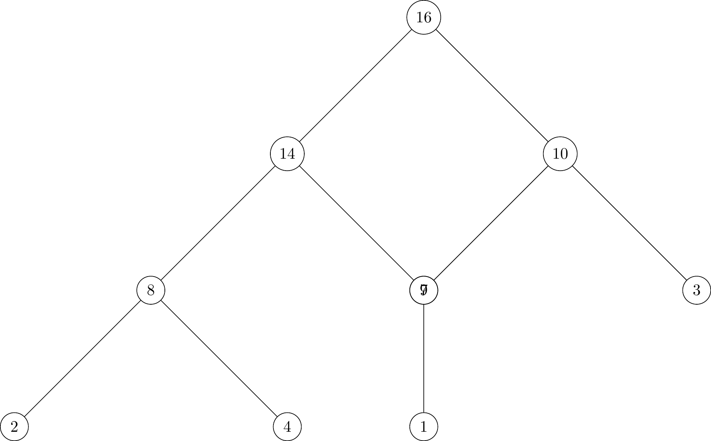

\usetikzlibrary{shapes}
\begin{tikzpicture}[
scale=2,
every node/.style={circle, draw=black}]
\node {1}
child {node {2}
child {node {4}}
child {node {5}}
}
child {node {3}
child {node {6}}
child {node {7}
child {node {8}}
child {node {9}}
}
};
\end{tikzpicture}Week 4
Recapping P-set
3b: \[ \begin{aligned} T_2(n) & = 25 T_2(n/5) + 13n^3 \\ & = 25^{\log_5 n}T_2(1) + \sum_{i=0}^{\log_5(n)} 25^i \cdot 13 \cdot (n/5^i)^2 \end{aligned} \]
Simplify the last expression. Should get \(\sim n^2 \log n\).
Trees
import numpy as np
# class to represent a node of a tree
class Node:
def __init__(self):
self.value = 0
self.leftchild = None
self.rightchild = None
# convert list to tree
def listToTree(l):
newnode = Node()
newnode.value = l[0]
l = l[1:]
if len(l)==1:
newnode.leftchild = listToTree(l)
elif len(l)>1:
mid = len(l)//2
newnode.leftchild = listToTree(l[:mid])
newnode.rightchild = listToTree(l[mid:])
return newnode
def readTree(node):
print(node.value)
if node.leftchild!=None:
readTree(node.leftchild)
if node.rightchild!=None:
readTree(node.rightchild)
if __name__=="__main__":
# create random numbers
x = np.random.randint(100,size=10)
print(x)
tree = listToTree(x)
readTree(tree)C++ code for a doubly linked list
#include <iostream>
using namespace std;
class Node {
public:
int value;
Node* next;
Node* prev;
};
class LinkedList {
public:
Node* head;
Node* tail;
LinkedList() {
head = NULL;
tail = NULL;
}
void add(int value) {
Node* newnode = new Node();
newnode->value = value;
newnode->next = NULL;
newnode->prev = tail;
if (tail!=NULL) {
tail->next = newnode;
}
tail = newnode;
if (head==NULL) {
head = newnode;
}
}
void print() {
Node* current = head;
while (current!=NULL) {
cout << current->value << endl;
current = current->next;
}
}
};
int main() {
LinkedList list;
list.add(5);
list.add(6);
list.add(7);
list.print();
}Comparison of Mergesort and Quicksort
Recall how mergesort and quicksort work:
- Mergesort: merging is in linear time
- Quicksort: Start with two pointers on either end of the list and move them towards each other. When they meet, the list is partitioned into two.
| Mergesort | Quicksort |
|---|---|
| (+) Always \(O(n \log n)\) | Average \(\Theta(n \log n)\) |
| (-) Lots of copying (not in place) | Worst case \(O(n^2)\) |
Heaps
A heap is a binary tree with the following properties:
- It is a complete binary tree
- The value of a node is greater than or equal to the value of its children.
C++ code for inserting into a heap
#include <iostream>
#include <vector>
using namespace std;
class Heap {
public:
vector<int> data;
void insert(int value) {
data.push_back(value);
int i = data.size()-1;
while (i>0 && data[i]>data[(i-1)/2]) {
swap(data[i],data[(i-1)/2]);
i = (i-1)/2;
}
}
void print() {
for (int i=0; i<data.size(); i++) {
cout << data[i] << " ";
}
cout << endl;
}
};
int main() {
Heap h;
h.insert(5);
h.insert(6);
h.insert(7);
h.insert(8);
h.insert(9);
h.print();
}Element \(A[1]\) contains the root of the heap. The parent of node \(i\) is always \(A[\lfloor i/2 \rfloor]\). The left child of node \(i\) is \(A[2i]\) and the right child is \(A[2i+1]\).
The max-heap property is that \(A[\text{parent}(i)] \geq A[i]\) for all \(i\).
Python class for Heap with a maxHeapify method:
class Heap:
def __init__(self):
self.data = []
def insert(self,value):
self.data.append(value)
i = len(self.data)-1
while i>0 and self.data[i]>self.data[(i-1)//2]:
self.data[i],self.data[(i-1)//2] = self.data[(i-1)//2],self.data[i]
i = (i-1)//2
def print(self):
print(self.data)
def maxHeapify(self,i):
left = 2*i+1
right = 2*i+2
largest = i
if left<len(self.data) and self.data[left]>self.data[largest]:
largest = left
if right<len(self.data) and self.data[right]>self.data[largest]:
largest = right
if largest!=i:
self.data[i],self.data[largest] = self.data[largest],self.data[i]
self.maxHeapify(largest)Since in the worst case, the problem reduces to size at least 2/3, we find that \(T(n) = T(2/3 \cdot n) + \Theta(1)\).
Solving this with the Master Theorem gives \(O(\log n)\).
To build a heap, we want to call MaxHeapify on all nodes. We can write this as Build-Max-Heap(A). We want to make sure to do this from the bottom-up. We find that Build-Max-Heap(A) runs in \(O(n \log n)\) time.
\begin{algorithm} \caption{Build-Max-Heap($A$)} \begin{algorithmic} \Procedure{Build-Max-Heap}{$A$} \For {$i \gets \lfloor n/2 \rfloor$ \To $1$} \State MaxHeapify($A,i$) \EndFor \EndProcedure \end{algorithmic} \end{algorithm}
Heaps - Day 2
\usetikzlibrary{shapes, trees}
\tikzset{
heap/.style={
every node/.style={circle,draw},
level 1/.style={sibling distance=30mm},
level 2/.style={sibling distance=15mm}
level 3/.style={sibling distance=5mm}
}
}
\begin{tikzpicture}[
scale=2,
heap
]
\node {16}
child {node {14}
child {node {8}
child {node {2}}
child {node {4}}
}
child {node {7}
child {node {1}}
}
}
child [sibling angle=10] {node {10}
child {node {9}}
child {node {3}}
};
\end{tikzpicture}
Comparison of heapsort and quicksort:
- Heapsort works in place
- A heap is a complete tree, where every node’s children must be greater than their parents.
- Heapsort: \(O(n \log n)\)
In heapsort, we know where our biggest element is: at the top. So we prune it, and we can re-establish the heap property in log(n) time-complexity. Recall that to update, we pick the last element in the heap (bottom row, right-most), and we can maxHeapify once more.
Greedy Algorithms and Dynamic Programming
Recall the idea of divide-and-conquer algorithms: we divide the problem into self-similar problems that we can ideally solve fast and recombine quickly.
Greedy methods work really well when we have the greedy choice property and optimal substructure.
*Greedy choice property**: Prove that whenever there is a choice, one of the optimal choices is the greedy one. This justifies choosing the greedy option. Show that all but one of the subproblems resulting from the greedy choice are empty.
Optimal substructure: This property is satisfied if an optimal solution to the problem contains within it optimal solutions to its suproblems. Therefore an optimal solution can be constructed efficiently from optimal solutions of its subproblems.
Cashiers Algorithm(x,c_1, c_2, ...., c_n)
Sort n coin denominations so that c_1 < c_2 < ... < c_n
S <- \phi
While x > 0
k <- largest coin denomination c_k such that c_k \leq x
If no such k, return no solution
Else
x <- x - c_k
S <- S \cup \{c_k\}
Return SWhat is the invariant of the algorithm?
Invariant: At the start of each iteration of the while loop, the amount of money remaining to be paid is the sum of the denominations in S.
Minimum Spanning Tree
A minimum spanning tree is a subset of edges of a connected, edge-weighted undirected graph that connects all the vertices together, without any cycles and with the minimum possible total edge weight.
\usetikzlibrary{positioning}
\begin{tikzpicture}[scale=3, vertex/.style={circle, draw=black}]
\node [vertex] (A) {A};
\node [vertex] (B) at ([shift=({-15:1cm})] A) {B};
\node [vertex] (C) at ([shift=({15:1cm})] B) {C};
\node [vertex] (D) at ([shift=({-80:1cm})] A) {D};
\node [vertex] (E) at ([shift=({-100:1cm})] C) {E};
\node [vertex] (F) at ([shift=({-90:1cm})] B) {F};
\node [vertex] (G) at ([shift=({-80:.5cm})] E) {G};
\draw (A) -- (B) node [midway, above] {7};
\draw (A) -- (D) node [midway, left] {5};
\draw (B) -- (C) node [midway, right] {8};
\draw (B) -- (D) node [midway, above] {9};
\draw (B) -- (E) node [midway, right] {7};
\draw (C) -- (E) node [midway, right] {5};
\draw (D) -- (F) node [midway, above] {6};
\draw (D) -- (E) node [midway, above] {15};
\draw (E) -- (F) node [midway, above] {8};
\draw (E) -- (G) node [midway, right] {9};
\draw (F) -- (G) node [midway, above] {11};
\end{tikzpicture}See kruskal.py.
Prims Algorithm:
Start with a node
Add the edge with the smallest weight to the tree
Continue until all nodes are in the treeKruskal Algorithm
Start with the minimum weight edge; add it to the tree
Repeatedly add the next minimum weight edge that does not form a cycle
Continue until all nodes are in the treeActivity Selection
Also called task scheduling…
Set \(S = \{ a_1, ..., a_n \}\) of proposed activities. Each activity has a start time \(s_i\) and a finish time \(f_i\) and each activity \(a_i\) takes place during the half-open interval \([s_i, f_i)\).
Two activities are compatible if their intervals do not overlap.
Activity selection: select maximal number of compatible activities.